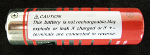

Module 4—Batteries and Balance
 Read
Read
Common Types of Commercial Cells

The warning on this battery reads “Caution. This battery is not rechargeable. May explode or leak if charged or if +- terminals are connected in reverse.”
Rechargeable cells are also popular in many applications including cellular telephones, video cameras, and personal music players.
One type of rechargeable cell is the nickel-cadmium cell. The advantage of nickel-cadmium batteries is that they have a relatively low internal resistance and can therefore supply high surges of current when necessary. They are also relatively easy to recharge. The main disadvantage of nickel-cadmium cells is that they typically have a lower cell potential—1.2 V as compared to alkaline dry cells, which have a measured potential of 1.5 V.

© 2009 Jupiterimages Corporation
Alkaline cells and other cells using zinc and manganese oxide as reactants are not rechargeable; some cells even come with warnings to prevent users from trying to recharge them. Later in this module you will learn more about the process of recharging cells and about why this process cannot be accomplished with all consumer cells.
Lithium ion cells are popular in small, portable devices like cellular telephones and digital cameras, which require short bursts of significant amounts of electrical energy. Lithium ion cells are typically composed of a lithium electrode, a graphite electrode (a form of carbon), and one of several possible electrolytes.
The most common wet cells in use today are lead-acid batteries used in automobiles. Lead-acid batteries are useful for automobiles because they are relatively cheap and easily recharged. The disadvantage of a lead-acid battery relates to its chemical contents—lead and concentrated sulfuric acid. Both substances can cause harm. Considerable caution needs to be exercised when this type of battery is transported, handled, and disposed of.